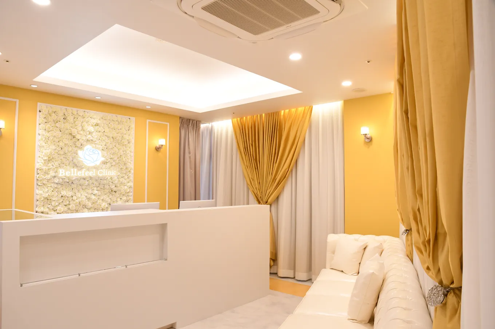
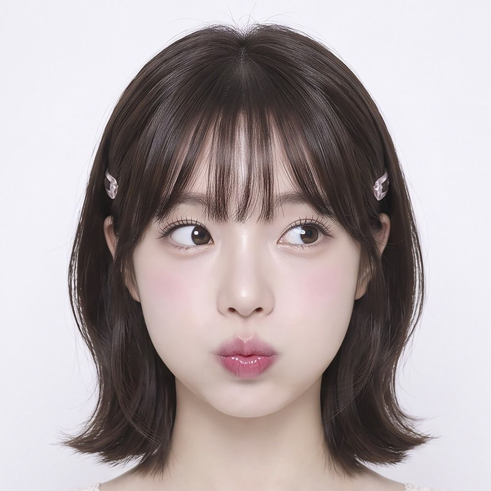
SEOUL → TOKYO / A NEW CHAPTER
×
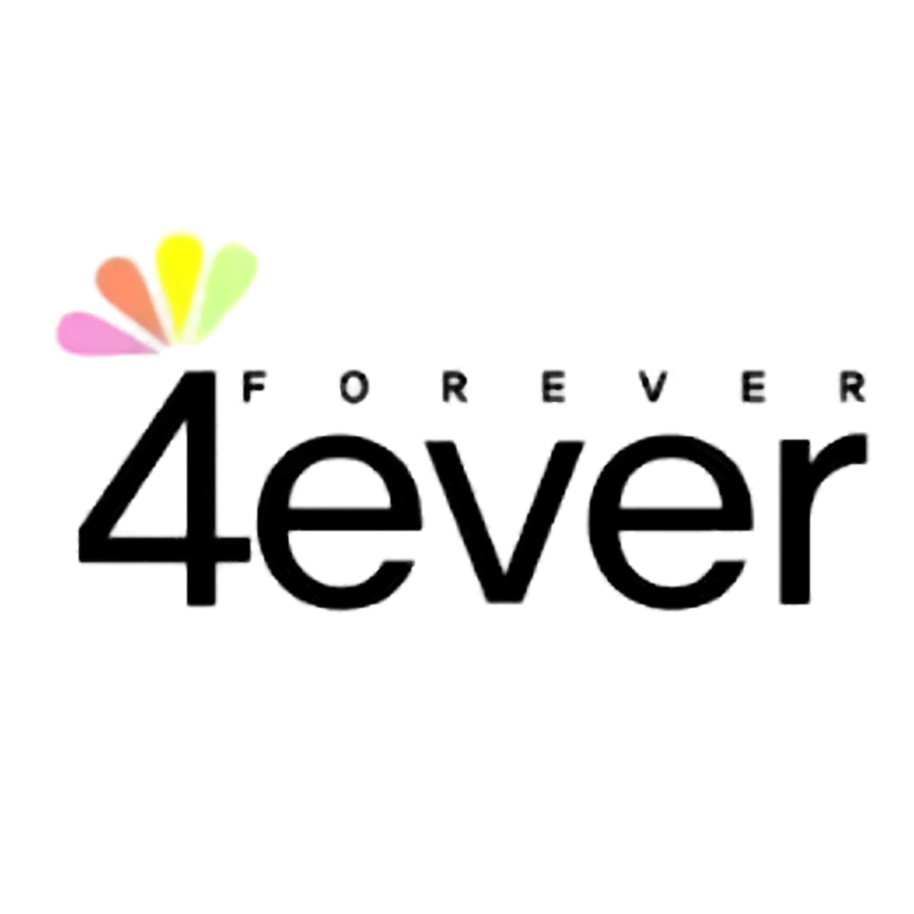
韓国美容と、
日本の美容医療が
出会う。
美容の新しい選択肢を、新宿から。
LIFT / SKIN / INNER輪郭も。肌も。
私らしく。
私らしく。
COLLABORATION
日本と韓国の美容が出会う。
新しいBellefeel新宿へ。
Bellefeel Clinic新宿院は、韓国の美容クリニックグループ「4EVER」とコラボレーションし、リニューアル。
日本で考える輪郭の美しさ。韓国で育まれた肌管理の発想。二つの視点が出会い、あなたらしい美しさを一緒に考えます。
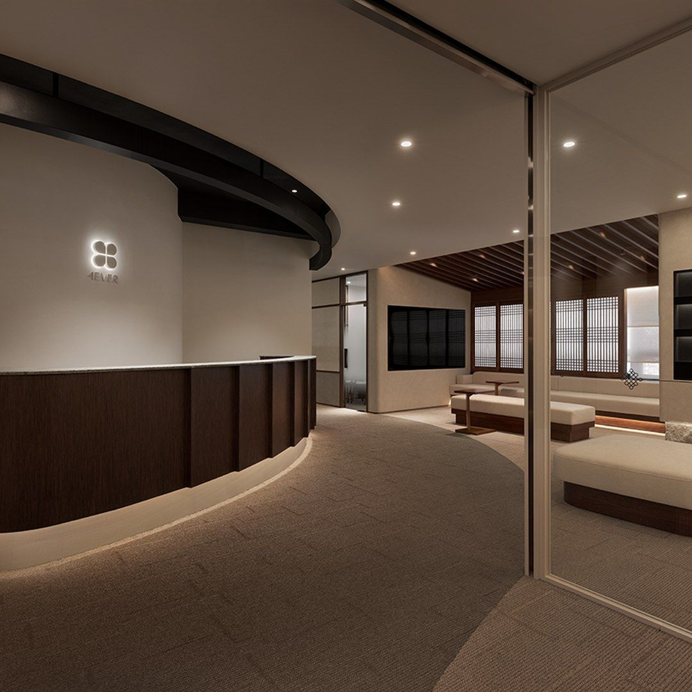
日本の輪郭設計＋韓国の肌育新宿で出会う、美容の新しい可能性。
4EVER BRAND STORY
FROM GANGNAM
TO SHINJUKU
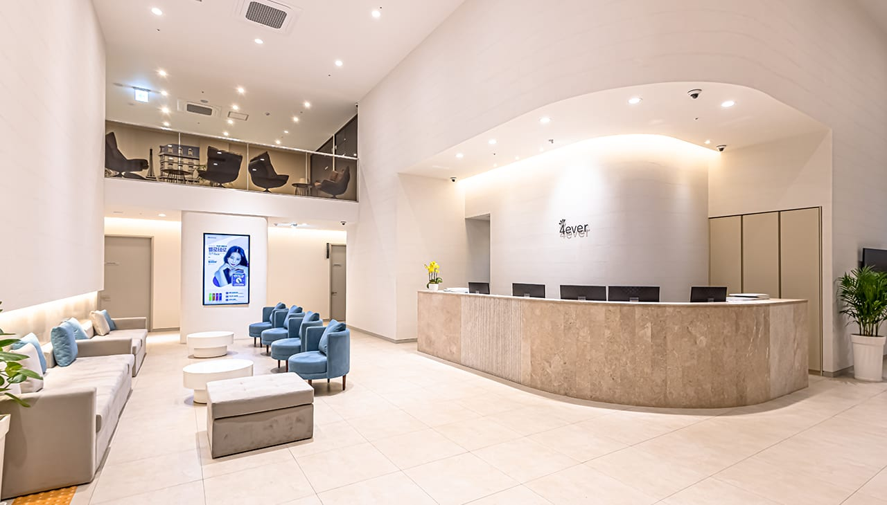
SPACE & CARE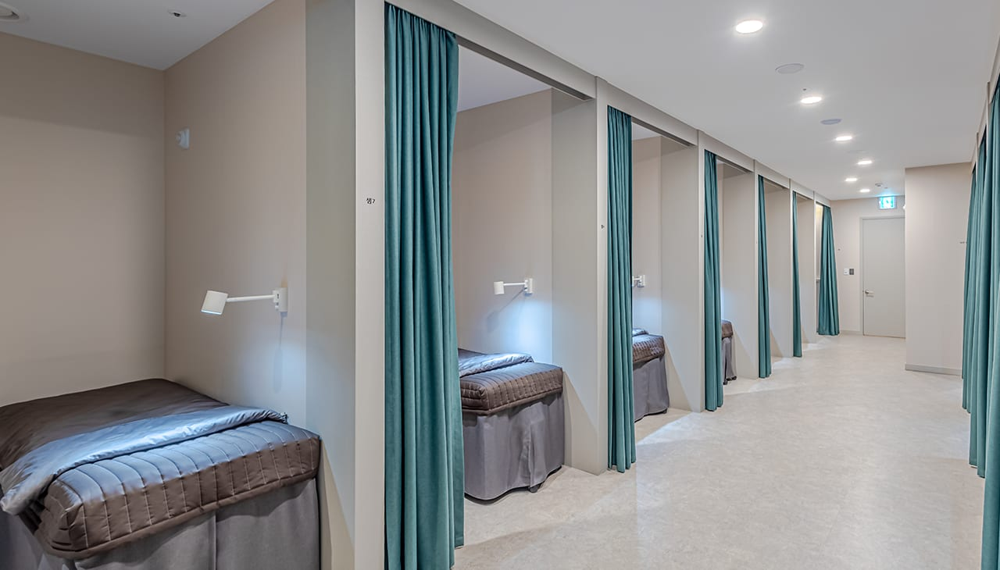
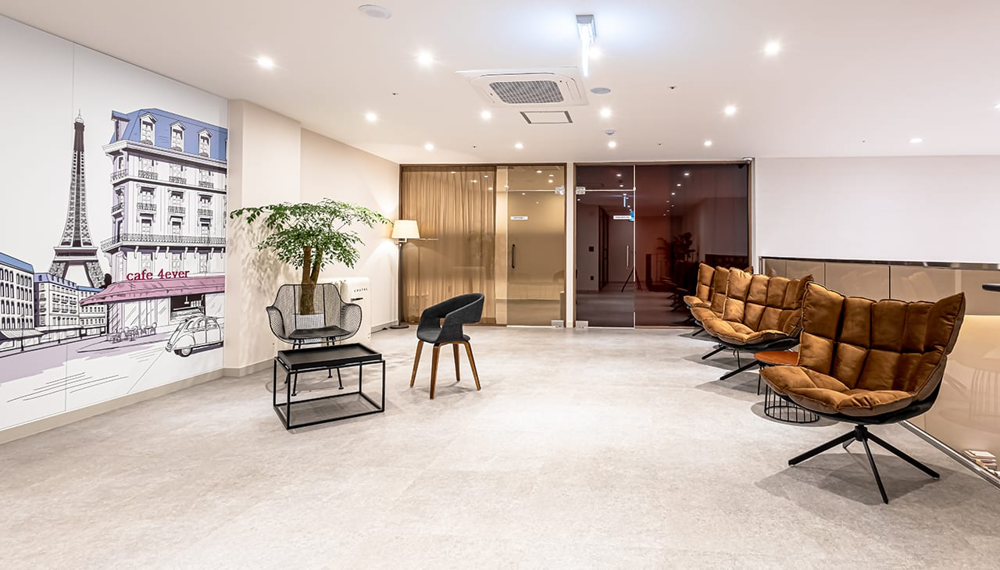
FROM GANGNAM TO SHINJUKU
4EVERグループの歩み
- 2008
SEOUL / GANGNAM
4EVER begins.
韓国・江南院から始まる。
韓国院の現在の施設写真 - 2016
KOREA
30 CLINICS
韓国全国30院へ。2018年、グループ累計100万件を突破。
韓国院の現在の施設写真 - 2023
BANGKOK
Beyond borders.
グローバル・バンコク院を開院。
4EVER韓国院の施設写真 / バンコク院ではありません - 2026
TOKYO / SHINJUKU
A new chapter, together.
Bellefeel新宿とのコラボレーションへ。
Bellefeel Clinic 新宿院
4EVERが大切にする、4つの価値。
積み重ねた信頼と経験
一人ひとりに合わせた設計
施術の前後まで続くケア
自分らしい自然な美しさ
韓国から、世界へ。そして東京・新宿で、Bellefeelとの新しい美容体験が始まります。
※4EVER公式ブランドストーリー掲載のグループ全体の歴史的実績です。新宿院単独の件数・本セットの実績ではありません。 出典 ↗
医師の経歴・公式の情報発信を見る
中務院長の経歴・資格と、4EVERの医療チーム・施設・ブランドの歩みを、それぞれの公式サイトでご確認いただけます。
中務院長の公式プロフィール ↗4EVERの医療チーム・ブランド紹介 ↗4EVERの公式動画・施術情報 ↗WHY BELLEFEEL × 4EVER
輪郭だけでも、
肌だけでもない。
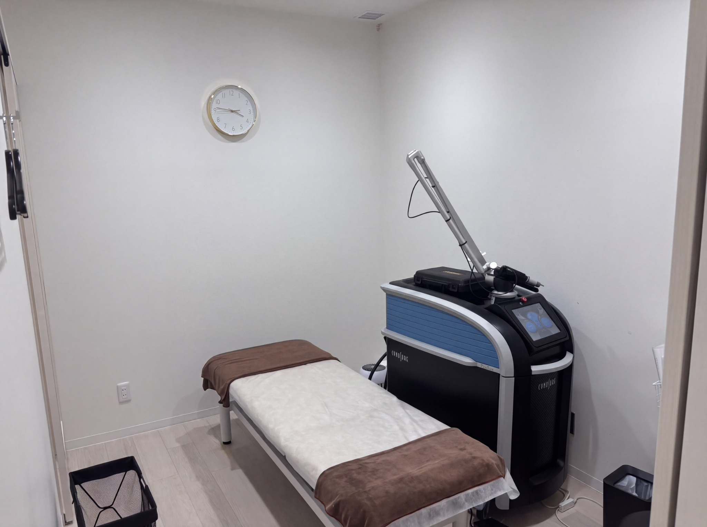
01JAPAN / Bellefeel
輪郭の土台を考える。
外科・形成外科で積み重ねた経験をもとに、骨格・たるみ・輪郭のバランスを考えるBellefeel新宿院の美容医療。
LIFT × SKIN BOOSTER
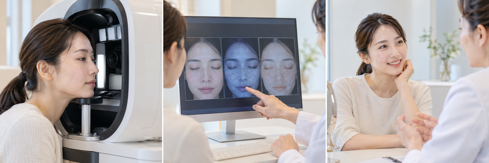
02KOREA / 4EVER
肌を育む視点。
韓国で培われた肌管理・スキンブースター・肌育の考え方を、日々の美容の選択肢へ。
SKIN × BEAUTY PHILOSOPHY
肌診断の説明用AIイメージ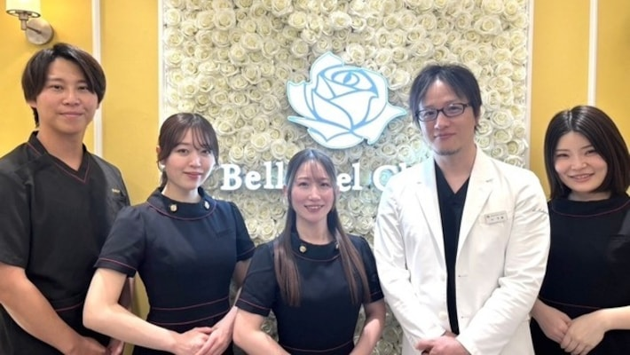
03BELLEFEEL × 4EVER
美容を、立体的に。
Bellefeelの医療体制と4EVERの美容思想をつなぐ。肌・輪郭・内側から、一人ひとりの美容設計を考えます。
SKIN × STRUCTURE × INNER
3D BEAUTY / SKIN × STRUCTURE × INNER
二つの強みから生まれる、3D BEAUTY
表面だけでなく、
美しさを立体的に。
Bellefeelの輪郭・リフトアップ治療と、4EVERの肌育の発想。その出会いから、肌・輪郭・内側を一緒に考える「3D BEAUTY」へ。診察とケアを、あなたに合わせて組み立てます。
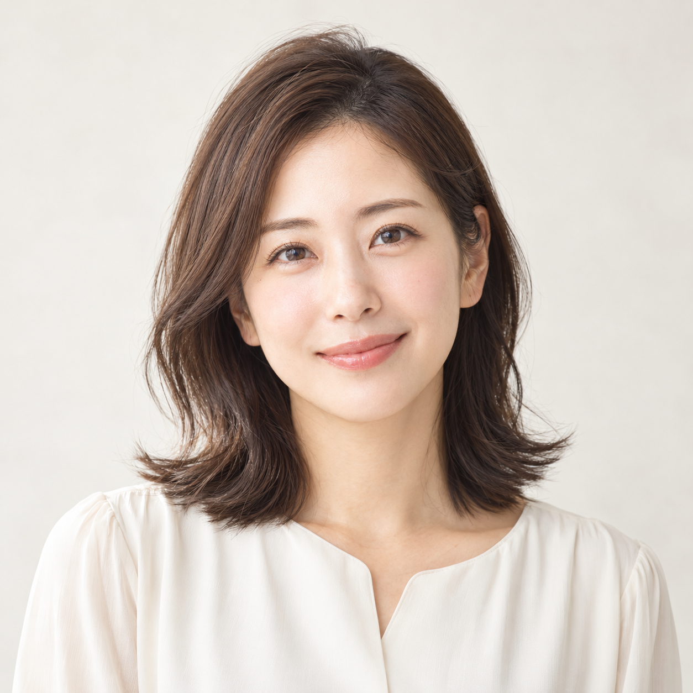
01肌表面キメ・毛穴・ツヤ
02肌内部・輪郭土台とバランス
03体の内側生活習慣・栄養
解剖学的な層・照射範囲・効果を表すものではありません。
SURFACE
肌表面
キメ・毛穴・ツヤなど、
目に見える肌の印象を整える。
STRUCTURE
肌内部・輪郭
糸リフトやヒアルロン酸、ハイフなどを
状態に合わせて組み合わせる。
INNER BEAUTY
体の内側
生活習慣や栄養などにも目を向け、
続けられる美容ケアを考える。
「3D施術」は特定の術式名ではなく、治療設計のコンセプトです。各セットの施術内容は料金表をご確認ください。インナービューティの相談・追加メニューは必要に応じて個別にご案内します。
COLLABORATION MENU / RENEWAL SPECIAL
コラボレーションを、
あなたの美容体験に。
二つの視点を体験する、3つの特別プログラム
各セット98,000円
全セットに VISIAフェイシャルドック 付き
SETA
輪郭とボリュームを整えたい方へ
糸リフト 6本＋ヒアルロン酸 1cc
＋ VISIAフェイシャルドック
SETB
リフトアップと肌ケアを一緒に
糸リフト 6本＋ポテンツァ
＋ VISIAフェイシャルドック
SETC
口元とフェイスラインが気になる方へ
貴族リフト＋医療ハイフ
＋ VISIAフェイシャルドック
施術の適応・組み合わせは医師の診察で判断します。使用する糸・製剤、ポテンツァのモード、照射範囲、麻酔の有無と費用はカウンセリングでご案内します。
新宿院 公式LINE / 無料相談自分に合う治療を相談するBEAUTY CONCEPT VISUAL
美しさの、さまざまな視点。
輪郭・肌・立体感。あなたの美容を考えるためのビジュアル。
AIによるコンセプトビジュアルです。
実際の患者様・症例・施術前後・施術効果を表すものではありません。
左右にスワイプして、ほかの写真を見る
REAL CASES
実症例
DOCTORS / MEDICAL TEAM
美しさを支える、
日韓の医療チーム。
Bellefeelの医療体制と、4EVERの美容思想。
一人ひとりへの診察・説明・ケアにつなげます。
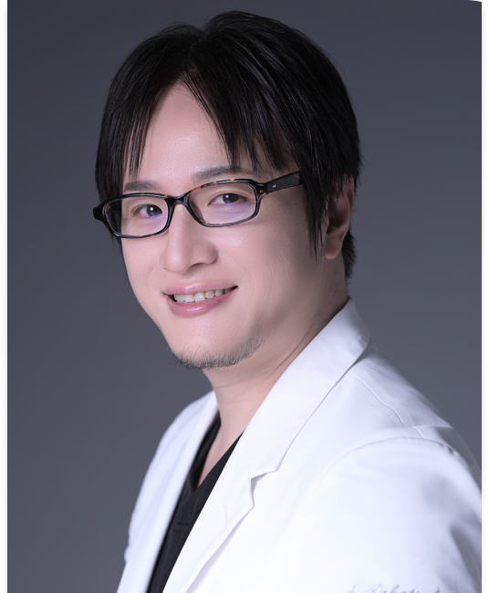
Bellefeel Clinic 新宿院長
中務 秀一
SHUICHI NAKATSUKASA
形成外科専門医経歴・資格・所属学会
- 2006
- 岡山大学医学部医学科卒業
広島市立広島市民病院 初期臨床研修 - 2008
- 湘南鎌倉総合病院 外科
- 2012
- 杏林大学医学部附属病院 形成外科
- 2016
- 東京大学医学部附属病院 形成外科
- 2017
- 国保旭中央病院 形成外科
- 2019
- 都内美容クリニック
- 2023
- Bellefeel Clinic 入職
- 形成外科専門医（2019年取得）
- 日本美容外科学会（JSAPS）正会員
- 米国形成外科学会（ASPS）国際会員
- 国際美容外科学会（ISAPS）国際会員
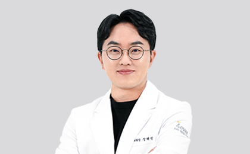
4EVER 代表院長 / 弘大院
Jung Haejin
정해진 / チョン・ヘジン
Forever Partners 代表医師経歴・所属学会
- 現 Forever Partners 代表医師
- 現 4EVER形成外科 院長
- 元 4EVER形成外科 狎鴎亭院 院長
- 大韓美容外科学会 正会員
- 国際美容形成学会 正会員
- 韓国美容形成学会 正会員
- 大韓肥満健康学会 正会員
- 大韓医学レーザー学会 正会員
- 大韓美容レーザー学会 正会員
4EVER側の医療チーム紹介です。新宿院での診療担当医・施術日程はご予約時にご確認ください。
VISIA / BEAUTY DESIGN
美容の設計は、
あなたを知ることから。
Bellefeelの診察に、4EVERの肌育の視点を。
VISIAによる肌画像の確認を重ね、治療の選択肢を考えます。
ANALYZE → DESIGN → CAREまず、あなたの肌を知る。
VISIA 肌画像解析装置
まず、あなたの肌を知る。
VISIAフェイシャルドック
01
肌を撮影
肌画像を記録する
02
画像を確認
医師と肌状態を確認
03
治療を相談
お悩みに合うプランへ
写真はAI生成の説明用イメージです。実際の院内・スタッフ・VISIA装置とは異なります。
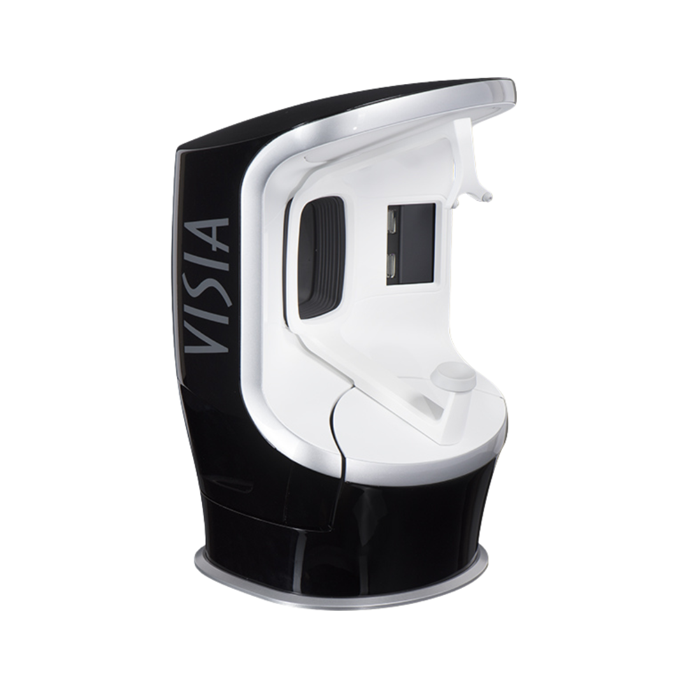
肌画像を活用し、見た目の印象だけではわかりにくい状態を医師と確認。お悩み・肌状態・生活背景をもとに、オーダーメイドの治療プランを考えます。
FIND YOUR BEAUTY
あなたが、
気になるのは？
コラボレーションの先に、あなたに合う選択肢を。
施術の適応は診察で判断します。各施術ページは準備中です。
CLINIC & ACCESS
Bellefeel Clinic
新宿院
JR新宿駅から徒歩3分
- 所在地
- 〒160-0023
東京都新宿区西新宿1-4-1
プリンスビル5F - 診療時間
- 11:00〜21:00
- 休診日
- 木曜日・日曜日
- 電話番号
- 090-6258-1848
診療日時・担当医はご予約時にご確認ください。
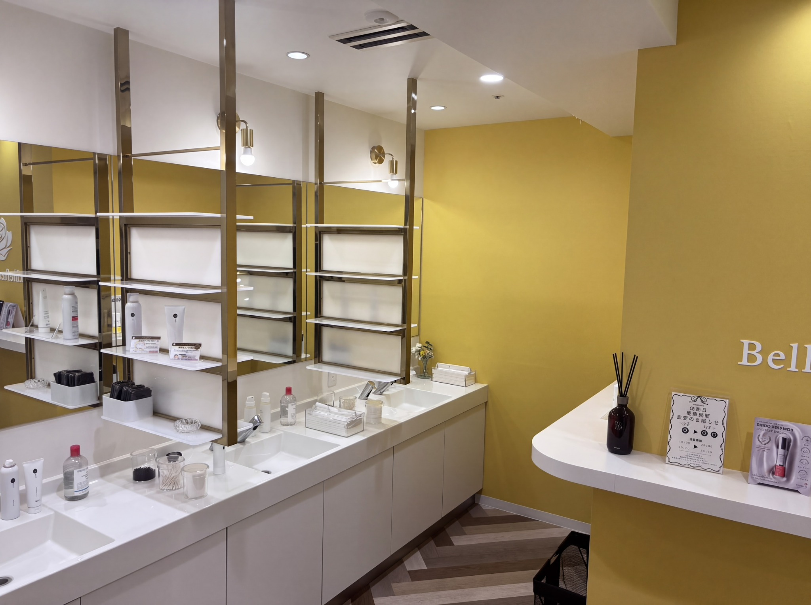
QUESTIONS & ANSWERS
よくある質問
3D施術は、全部の治療を受ける必要がありますか？
いいえ。3D施術は美容を3つの視点で考えるコンセプトです。すべてを一度に行うものではなく、医師の診察で必要な施術を選びます。
A・B・C、どのセットが自分に合いますか？
輪郭・ボリュームのお悩みにはA、輪郭と肌のお悩みにはB、口元とフェイスラインのお悩みにはCが相談の目安です。最終的な適応は診察で判断します。
VISIAフェイシャルドックでは何をしますか？
肌画像を撮影し、肌の状態を医師と確認します。画像だけで診断を確定するものではなく、問診・診察と合わせて治療の方針を考えます。
痛みやダウンタイムはありますか？
施術により痛み・腫れ・赤み・内出血などが生じることがあります。糸リフトでは引きつれや違和感、ポテンツァでは赤みや熱感なども想定されます。方法・部位・個人差によって異なるため、診察時に詳しく説明します。
複数の施術は同じ日に受けられますか？
肌やお体の状態、組み合わせによっては日程を分ける場合があります。同日施術をご希望の場合は、ご予約時にお知らせください。
貴族リフトはどのような施術ですか？
口元周辺のお悩みに対してご提案するメニューです。具体的な方法・使用材料・適応・リスクは、診察時にお顔の状態に合わせてご説明します。
韓国へ渡航する必要はありますか？
今回のリニューアル記念メニューはBellefeel Clinic新宿院でご相談いただけます。予約は新宿院のLINE・WEB・お電話をご利用ください。
カウンセリングだけでも予約できますか？
はい。施術を迷っている段階でも、お気軽に無料カウンセリングをご予約ください。予約時に「相談のみ」とお伝えいただくとスムーズです。
施術前にご確認ください
妊娠・授乳中の方、持病やアレルギーのある方、服薬中の方、施術部位に他の治療歴がある方は、事前に医師へお知らせください。適応の有無は施術ごとに判断します。
各施術には副作用・リスクがあり、効果や経過には個人差があります。施術後の過ごし方、メイク・入浴・運動の再開時期は医師の指示に従ってください。
主な副作用・リスク
糸リフト：痛み、腫れ、内出血、左右差、引きつれ、感染、糸の露出等。
ヒアルロン酸：腫れ、内出血、凹凸、左右差、アレルギー、まれに血管閉塞・皮膚壊死等。
ポテンツァ：赤み、熱感、腫れ、内出血、色素沈着、感染等。
ハイフ：痛み、赤み、熱感、熱傷、しびれ、神経障害等。
貴族リフト：方法によりリスクが異なります。具体的な術式・材料とあわせて医師が説明します。
CONSULTATION
あなたらしい美容を、
一緒に考えましょう。
今のお悩みも、これからの理想も。
Bellefeel新宿で、まずは相談する。